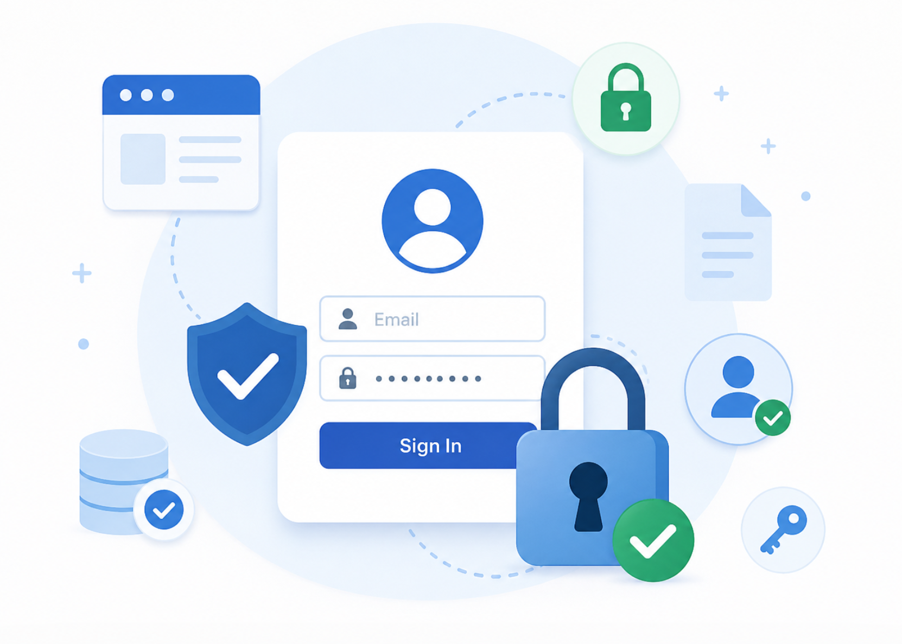

Welcome
About
This is the home page of the Authentication Lab. It gives an overview of the project and links to the authentication features.
Create Account and Login buttons are only available when the user is not logged in. After login, the user can access the protected profile page instead.
The My Profile page and header link are only visible to authenticated users. This makes it clear that the page is a protected resource. Access to the page is also protected by JWT authentication on the backend.
The page uses simple navigation and semantic HTML for better accessibility.
Secure authentication

User accounts are protected with JWT authentication and secure access control.